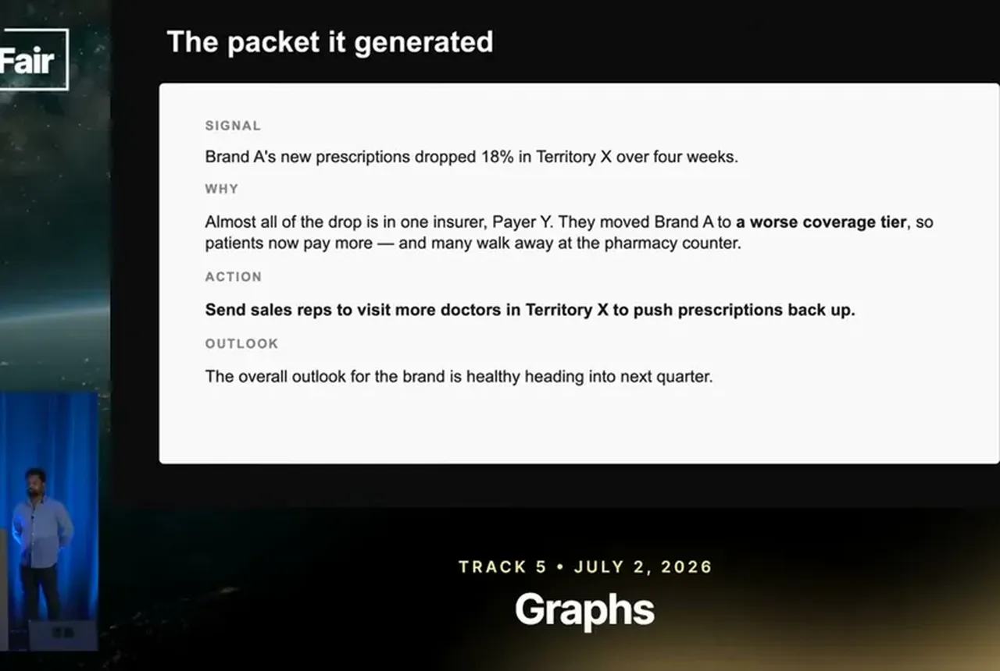
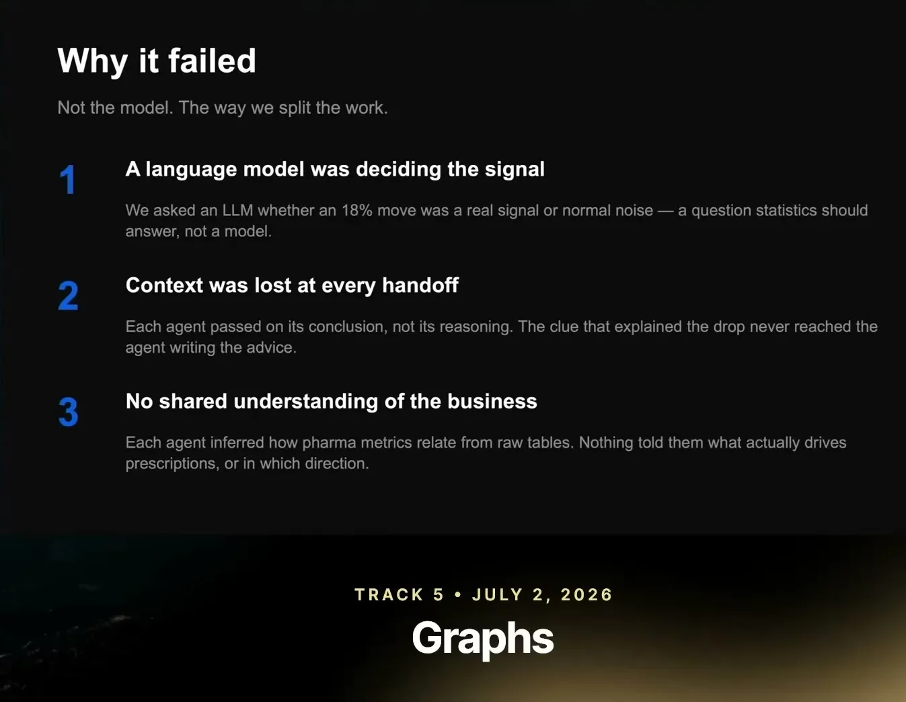
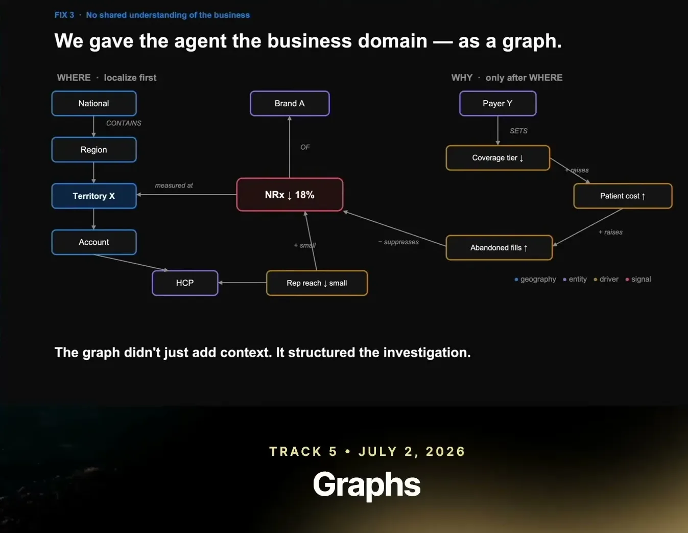

Why We Killed Our Multi-Agent Pipeline
ZS Associates rebuilt an analytics pipeline: deterministic statistical signal detection, a consolidated reasoning agent delegating investigation, and a knowledge graph acting as a control plane over hypotheses.
If you only read one thing
- A four-agent pipeline mirroring an analyst's workflow (signal detection, source localization, driver attribution, synthesis) produced individually-correct facts but an incoherent end-to-end answer, because context was lost at each agent handoff and no single agent owned the full picture (c1, c2, c3).
- The fix moved signal detection out of the LLM entirely into a deterministic statistical pipeline, and consolidated reasoning into one agent that can delegate investigation (not judgment) to sub-agents (c4, c5).
- A domain knowledge graph was rebuilt to act as a control plane bounding the agent's investigation, where each graph edge represents a hypothesis the agent can evaluate; the resulting system reproduces work that took an analyst three to four weeks in about 20-30 minutes after 50-plus agent turns (c6, c7, c8).
This traces the talk's own before/after framing: per-stage agents that lost context at handoffs, replaced by a deterministic detector feeding one reasoning agent that treats the domain graph as a bounded, sequenced WHERE-then-WHY hypothesis space (ours).
Why this talk is a blueprint, not a take (ours)
Scope: A pharma commercial analytics agent that investigates why a KPI (e.g., prescription volume) moved, using a domain knowledge graph to bound its search; covers signal detection through root-cause synthesis, not the downstream action or outlook write-up in detail.
A single reasoning agent that, once a deterministic pipeline queues a statistical signal, traverses a domain knowledge graph (WHERE then WHY) to find and verify a root cause, delegating bounded sub-investigations without losing end-to-end judgment. The team reports it reproduces roughly three to four weeks of analyst work in about 20-30 minutes across 50-plus agent turns.
Prerequisites the talk implies:
- A deterministic statistical pipeline that can detect and threshold signals before any agent runs
- A domain knowledge graph built with subject-matter experts mapping entities (geography, payer, account, brand, KPI) and their relationships
- An agent framework that supports dynamically spawned sub-agents returning findings, not judgment, to a single owning agent
- Underlying data the agent can query to test each graph-edge hypothesis
What the talk does not say:
- No team size, build timeline, or engineering cost for constructing the knowledge graph with domain experts
- No accuracy or failure-rate numbers for the new system, only the speed comparison
- The three-to-four-weeks analyst baseline is the speakers' own framing, not an independently benchmarked figure
- No detail on how action or outlook recommendations are generated or validated once the root cause is found
If you were to replicate one thing first: Pull the noisiest, most deterministic step of your agent pipeline (typically anomaly or threshold detection) out of the LLM into a plain statistical job that queues work for the agent, before touching agent topology.
| Component | What it does (from the talk) | Evidence | Slide |
|---|---|---|---|
| Per-stage agent pipeline (killed) | One agent per analyst workflow stage (signal detection, source localization, driver attribution, synthesis), tied together by an orchestrator agent. | c1 · 02:35 |  |
| Generated packet (killed design) | Produced a signal/why/action/outlook summary that looked clean but was internally incoherent: the action ignored the correctly identified payer cause. | c2 · 04:07 | |
| Deterministic signal detector | Automated statistical pipeline with guardrails and thresholds that scans KPIs for anomalies and queues a signal before any agent runs. | c4 · 07:14 |  |
| Single reasoning agent | Owns end-to-end judgment once a signal is queued; can delegate bounded investigations to sub-agents but keeps reasoning centralized. | c5 · 13:57 |  |
| Sub-agents | Dynamically spawned for focused investigations (e.g., checking rep activity in a region); return findings, not reasoning or judgment. | c5 · 13:57 | |
| Domain knowledge graph | Maps entities (geography, payer, account, brand, KPI) and their relationships, built with pharma domain experts; treated as a control plane, not a lookup layer. | c6 · 14:27 | |
| WHERE traversal (localization) | Agent narrows down where a metric decline is concentrated, across region, territory, or account, before asking why. | c9 · 11:23 | |
| WHY traversal (driver chain) | Once WHERE is narrowed, agent evaluates KPI-relationship edges as hypotheses to find why the decline happened. | c10 · 11:55 | |
| Result | After 50-plus agent turns, the redesigned system reproduces analysis that previously took an analyst three to four weeks, in about 20-30 minutes. | c8 · 13:26 |
Mirroring the analyst workflow, and where it broke
- ZS built one agent per stage of a pharma commercial analyst's workflow: signal detection, source localization, driver attribution, and synthesis, tied together by an orchestrator agent.
- The system produced a clean-looking summary (a prescription drop, a payer coverage cause, a recommended action, an outlook), but on inspection the recommended action ignored the payer/insurance cause that had correctly been identified, and the resulting outlook didn't follow from the wrong action.
“we built agents for every step, right? Signal detection, we said, "Okay, we'll have an agent for signal detection. It'll identify identify the signals for me."”
said at 02:35“The cause is right. It identified the right cause, right? Because patients can't afford the drug drug, right? But the action it said it didn't really focus on the payer part, the insurance part of it, right?”
said at 04:07Diagnosis: context lost at every handoff
- The team traced the failure to context being lost at each agent-to-agent handoff, not to any individual LLM call being wrong; each agent derived a locally correct fact, but no single agent understood or carried forward the end-to-end picture across handoffs.
“there is a lot of context hand off which is happening, and context is actually getting lost at each of these hand offs.”
said at 05:09Fix 1: pull deterministic work out of the agent
- Signal detection (e.g., a sales or prescription drop) was identified as a purely deterministic, statistical task that an LLM should not be performing inconsistently.
- The team separated it into an automated deterministic pipeline with statistical methods, guardrails, and thresholds that runs before any agent is invoked; the agent only wakes up once a signal is queued, and its job becomes investigation, not identification.
“This is something we don't want an agent to do. This is a completely deterministic workflow. So, we separated it out from the agentic system.”
said at 07:14Fix 2: consolidate reasoning into one agent
- Rather than distributing judgment across separate agents per stage, the team consolidated end-to-end reasoning into a single agent, based on observing how Claude Code operates.
- That agent can still delegate focused, bounded investigations to dynamically spawned sub-agents and get results back, but the sub-agents return findings, not reasoning or judgment, which stays with the single owning agent.
“need to have one agent, right? Which owns the reasoning end to end, right? This agent can actually take the call to use sub agents, tools, skills to actually spawn off other other tasks basically”
said at 13:57Fix 3: the knowledge graph as a control plane
- A domain knowledge graph, built with pharma domain experts, maps entities like geography, payer, account, brand, and KPI relationships.
- The team's key reframe is that this graph is not a lookup layer the agent queries for data, but a control plane: every graph edge represents a hypothesis the agent can evaluate against the underlying data, which bounds the space of investigations the agent is allowed to pursue.
- The graph also sequences the investigation: the agent first localizes WHERE a decline is concentrated (region, territory, account), then evaluates WHY using KPI-relationship edges.
“graph has to be treated as a control plane which the agent uses to navigate and takes the next decisions basically.”
said at 14:27“Graph access the control surface. So, agent every edge is a hypothesis.”
said at 11:55“It might happen within a region. It could be concentrated in a territory. It would be concentrated in a combination of a territory or a pair or an account.”
said at 11:23“This is where where the KPIs and the relations come comes in. Once the agent is able to narrow down the where, then it's able to go and figure out the uh figure out the why part of it.”
said at 11:55Result
- After the redesign, the agent runs a loop of traversing the graph, forming a hypothesis from an edge, checking it against underlying data, and either continuing or backtracking, until it converges on a root cause.
- The team reports the resulting run reproduces analysis that previously took an analyst three to four weeks, in roughly 20-30 minutes and 50-plus agent turns.
“after like 50 plus turns, a whole lot of tokens, it's able to produce something an analyst was able to produce maybe in three or four weeks in like maybe 20 30 minutes.”
said at 13:26Commentary (ours)
(ours) The headline speed comparison (three to four weeks vs. 20-30 minutes) is the speakers' own framing and isn't benchmarked against a baseline in the talk; the more load-bearing claim is the architectural lesson that distributing judgment across agents, not distributing work, was the actual bug.

Underlying detail — every claim, typed and timestamped (10)
| Stance | Claim | t |
|---|---|---|
| asserts | ZS built a separate agent for each stage of the analyst workflow: signal detection, source localization, driver attribution, and synthesis, tied together by an orchestrator. | 02:35 |
| warns | The system correctly identified the root cause but the recommended action ignored it, making the output internally incoherent despite looking clean. | 04:07 |
| asserts | Context was getting lost at each handoff between agents, which was the actual cause of the incoherent output, not any single LLM failing. | 05:09 |
| recommends | Signal detection should be a deterministic statistical workflow run before the agent, not a task performed inconsistently by an LLM. | 07:14 |
| recommends | One agent should own end-to-end reasoning and can delegate bounded investigations to sub-agents, but judgment should not be distributed across agents. | 13:57 |
| recommends | The domain knowledge graph should be treated as a control plane that guides the agent's navigation and decisions, not just a lookup layer. | 14:27 |
| asserts | Every edge in the domain graph represents a hypothesis the agent can evaluate, bounding the surface the agent is allowed to investigate. | 11:55 |
| asserts | After 50-plus agent turns, the system reproduces analysis that previously took a human analyst three to four weeks, in about 20-30 minutes. | 13:26 |
| asserts | The knowledge graph guides the agent to localize where a decline is concentrated, across region, territory, or account, before investigating why it happened. | 11:23 |
| asserts | Only after the graph narrows down where a metric problem is concentrated does the agent investigate why, using KPI relationships in the graph. | 11:55 |
Machine-readable copy embedded in this page (script#ontology) and in the corpus ontology.